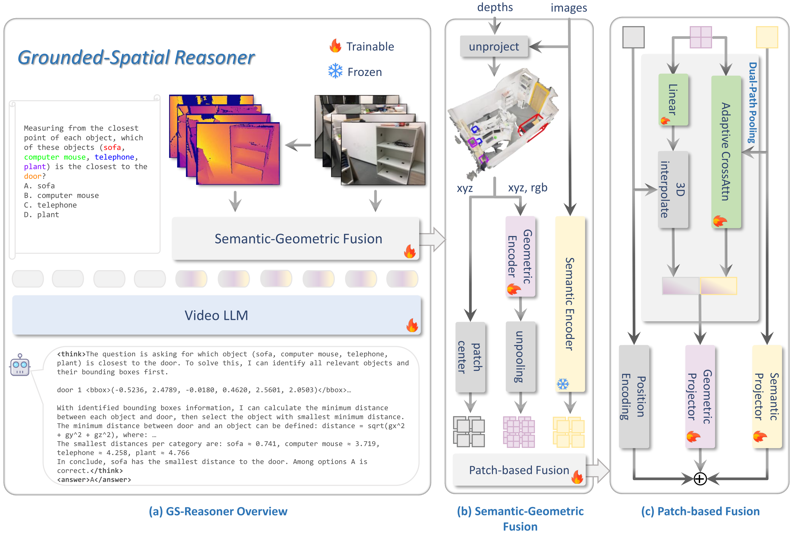
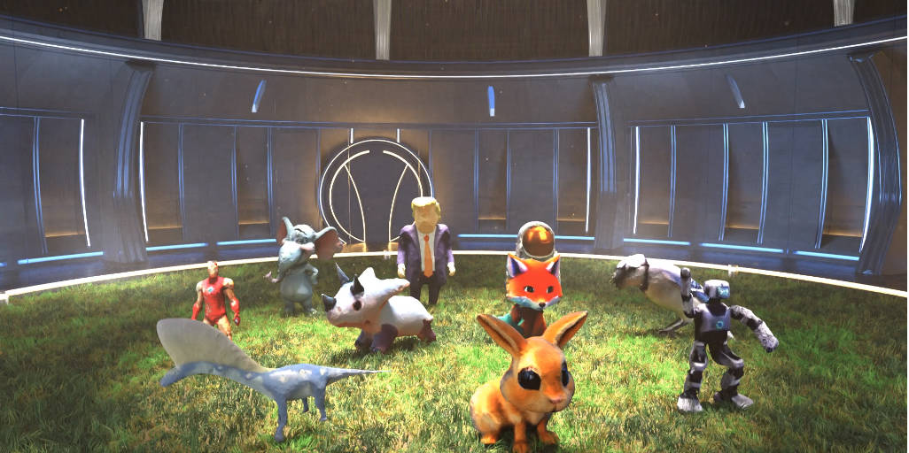
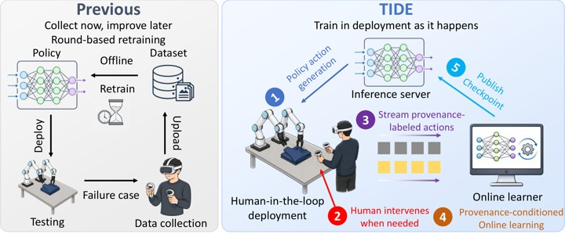
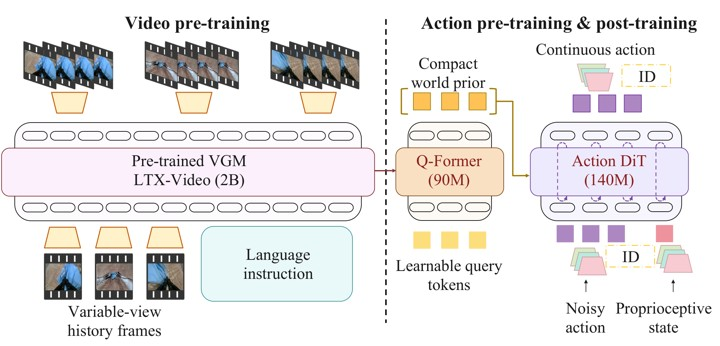
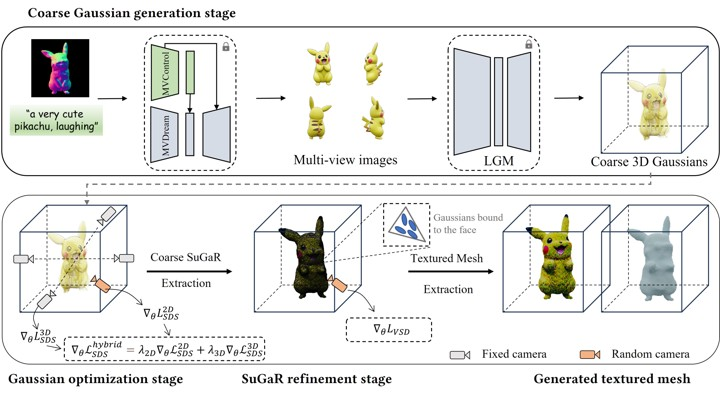

About Me
I am currently a Ph.D. student at the Shanghai Innovation Institute (SII), jointly affiliated by Westlake University and Zhejiang University, under the supervision of Prof. Li Zhang and Prof. Peidong Liu. Before that, I obtained my Bachelor’s degree from Tongji University.
My research interests are in dexterous manipulation and visual-tactile sensing.
My research aims to develop embodied AI agents with the generalizability, dexterity, and adaptability needed to operate effectively in complex, unstructured real-world environments.
Research
* Equal contribution.
TF²-Steering: Action Refinement with Tactile Forecasts and Feedback via Velocity-Field SteeringarXiv preprint, 2026
Tactile forecasts and real-time feedback steer a flow-matching policy's velocity field for dexterous manipulation. |
|
|
 |
Reasoning in Space via Grounding in the WorldICLR, 2026
A 3D language model that bridges 3D visual grounding and spatial reasoning. |
|
 |
DreamMesh4D: Video-to-4D Generation with Sparse-Controlled Gaussian-Mesh Hybrid RepresentationNeurIPS, 2024
A hybrid Gaussian-mesh representation for high-quality video-to-4D generation. |
|
 |
Training in Deployment: Human-in-the-loop Online Post-Training for Robot ManipulationarXiv preprint, 2026
Online post-training learns from human interventions and policy rollouts during robot deployment. |
|
 |
X-World: Transferring Video Priors to Variable-View Robot ControlarXiv preprint, 2026
Pretrained video priors support robot control across variable camera views and heterogeneous action interfaces. |
|
 |
Controllable Text-to-3D Generation via Surface-Aligned Gaussian Splatting3DV, 2025
Multi-view diffusion guidance and surface-aligned Gaussian splatting enable controllable, high-quality 3D generation. |